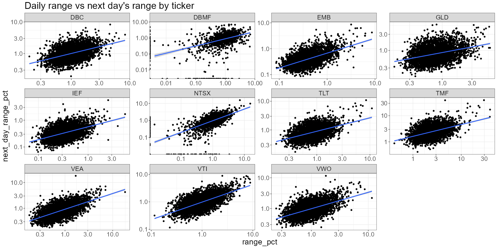

Snippets
Misc
Notes from
Calculate Returns from Stock Prices
returns <- prices |> group_by(symbol) |> mutate(ret = adjusted / lag(adjusted) - 1) |> select(symbol, date, ret) |> drop_na(ret)all_returns = ( index_prices .assign(ret=lambda x: x.groupby("symbol")["adjusted"].pct_change()) .get(["symbol", "date", "ret"]) .dropna(subset="ret") )Basic Calculation of Volatility
VTI <- VTI %>% # calculate volatility as pct range mutate(range_pct = (high/low - 1) * 100)- VTI is daily OHLC data
- Volatility as a percentage range between daily highs and daily lows
Test whether assumptions are consistent over a time period
Notes from How to Test the Assumption of Persistence
If your strategy only works when certain conditions are present, then you need to see how consistent they are across time.
Don’t use overlapping windows (i.e. rolling) in your analysis of persistence. It creates relationships between subsequent daily estimates of your statistic.
Use Case Examples
Correlation or covariance between pairs of assets.
- You’ll typically find that correlations are also persistent, but that this persistence is much noisier than than the volatility example below
Asset Returns
- You’ll typically find almost no persistence at all, other than a very weak negative relationship at the daily timescale in some assets.
Example: How persistent is volatility over time?
- Statistically, you can calculate the ACF. For relationships further back than one day, ACF(2), ACF(3), etc.
VTI <- VTI %>% # calculate volatility as pct range mutate(range_pct = (high/low - 1) * 100) %>% # ensure our observations are arranged by date arrange(date) %>% # shift our observations mutate(next_day_range_pct = lead(range_pct, 1)) %>% # remove NAs (we'll have an NA on our last observation as there's no tomorrow) na.omit() VTI %>% ggplot(aes(x=range_pct, y=next_day_range_pct)) + scale_x_log10() + scale_y_log10() + geom_point() + # add regression line geom_smooth(method = "lm", formula = 'y ~ x') + labs( title = "Daily range vs next day's range" )- I think the data is over a 20 year span.
- Using log scaled axes because the points were clumped towards zero and obscuring the relationsip.
- The seems to be a fairly persistent relationship between today’s and tomorrow’s volatility
VTI %>% mutate(year = year(date)) %>% ggplot(aes(x=range_pct, y=next_day_range_pct)) + scale_x_log10() + scale_y_log10() + geom_point() + geom_smooth(method = 'lm', formula = 'y ~ x') + facet_wrap(~year, scales = "free") + labs( title = "Daily range vs next day's range by year" )- Some years are more volatile than others, the relationship between today’s and yesterday’s volatilities has been reasonably consistent over time. And while the slope of the regression line has changed over the years, it’s always up and to the right (i.e. reasonably persistent).

prices %>% # calculate the daily range mutate(range_pct = (high/low - 1) * 100) %>% # perform subsequent operations on each ticker separately group_by(ticker) %>% arrange(date) %>% mutate(next_day_range_pct = lead(range_pct, 1)) %>% na.omit() %>% # plot each ticker separately ggplot(aes(x=range_pct, y=next_day_range_pct)) + scale_y_log10() + scale_x_log10() + geom_point() + geom_smooth(method = 'lm', formula = 'y ~ x') + facet_wrap(~ticker, scales = "free") + labs( title = "Daily range vs next day's range by ticker" )- Still fairly consistent
{kind=link}
{kind=link}
Get Data
Packages
- {fredr} - The Federal Reserve Bank of St. Louis provides more than 818,000 US and international time series from 109 sources via the API FRED. The data is freely available and can be browsed online on the FRED homepage.
- {simfinapi} - Simfin make fundamental financial data freely available to private investors, researchers, and students. The data provider applies automating data collection processes to collect a large set of publicly available information from firms’ financial statements.
- {Rblpapi} - Bloomberg’s Fundamental coverage includes current and normalized historical data for the balance sheet, income statement, cash flows statement, and financial ratios. Additionally, it provides industry-specific data for communications, consumer, energy, health care, and many more. In order to retrieve Bloomberg data, a paid subscription is needed.
- {Quandl} - Quandl is a publisher of alternative data. Quandl publishes free data, scraped from many different sources from the web. However, some of the data requires specific subscriptions on the Quandl platform.
- {edgarWebR} - The EDGAR database provides free public access to corporate information, allowing you to research a public company’s financial information and operations by reviewing the filings the company makes with the SEC. You can also research information provided by mutual funds (including money market funds), exchange-traded funds (ETFs), and variable annuities.
Stock Prices
library(tidyverse) library(tidyquant) # Download symbols of DOW index symbols <- tq_index(x = "DOW") |> filter(company != "US DOLLAR") # Download prices of DOW index constituents prices <- tq_get(x = symbols, get = "stock.prices", from = "2000-01-01", to = "2022-12-31")import pandas as pd import numpy as np import yfinance as yf # Download symbols of DOW index url = ("https://www.ssga.com/us/en/institutional/etfs/library-content/" "products/fund-data/etfs/us/holdings-daily-us-en-dia.xlsx") symbols = ( pd.read_excel(url, skiprows=4, nrows=30) .get("Ticker") .tolist() ) # Download prices of DOW index constituents index_prices = ( yf.download(tickers=symbols, start="2000-01-01", end="2022-12-31") .melt(ignore_index=False, var_name=["variable", "symbol"]) .reset_index() .pivot(index=["Date", "symbol"], columns="variable", values="value") .reset_index() .rename(columns={"Date": "date", "Open": "open", "High": "high", "Low": "low", "Close": "close", "Adj Close": "adjusted", "Volume": "volume"}) )Fama French Factors
Example: {frenchdata}
library(frenchdata) factors_ff3_monthly_raw <- download_french_data("Fama/French 3 Factors") factors_ff3_monthly <- factors_ff3_monthly_raw$subsets$data[[1]] |> mutate( month = floor_date(ymd(str_c(date, "01")), "month"), across(c(RF, `Mkt-RF`, SMB, HML), ~as.numeric(.) / 100), .keep = "none" ) |> rename_with(str_to_lower) |> rename(mkt_excess = `mkt-rf`) |> select(month, everything()) print(factors_ff3_monthly, n = 5) #> # A tibble: 1,170 × 5 #> month mkt_excess smb hml rf #> <date> <dbl> <dbl> <dbl> <dbl> #> 1 1926-07-01 0.0296 -0.0256 -0.0243 0.0022 #> 2 1926-08-01 0.0264 -0.0117 0.0382 0.0025 #> 3 1926-09-01 0.0036 -0.014 0.0013 0.0023 #> 4 1926-10-01 -0.0324 -0.0009 0.007 0.0032 #> 5 1926-11-01 0.0253 -0.001 -0.0051 0.0031
q-Factors
Example:
factors_q_monthly_link <- "https://global-q.org/uploads/1/2/2/6/122679606/q5_factors_monthly_2022.csv" factors_q_monthly <- read_csv(factors_q_monthly_link) |> mutate(month = ymd(str_c(year, month, "01", sep = "-"))) |> select(-R_F, -R_MKT, -year) |> rename_with(~ str_remove(., "R_")) |> rename_with(~ str_to_lower(.)) |> mutate(across(-month, ~ . / 100)) print(factors_q_monthly, n = 5) #> # A tibble: 672 × 5 #> month me ia roe eg #> <date> <dbl> <dbl> <dbl> <dbl> #> 1 1967-01-01 0.0683 -0.0297 0.0192 -0.0218 #> 2 1967-02-01 0.0165 -0.00227 0.0354 0.0222 #> 3 1967-03-01 0.0200 -0.0178 0.0184 -0.0104 #> 4 1967-04-01 -0.00690 -0.0288 0.0106 -0.0173 #> 5 1967-05-01 0.0285 0.0252 0.00692 0.00158
Macroeconomic Predictors
Example: Welch and Goyal (2008)
download.file( url = "https://docs.google.com/spreadsheets/d/1g4LOaRj4TvwJr9RIaA_nwrXXWTOy46bP/export?format=xlsx", destfile = "macro_predictors.xlsx", mode = "wb" ) macro_predictors <- read_xlsx("macro_predictors.xlsx", sheet = "Monthly") |> mutate( # Several cleaning steps & variable transformations... ) #> # A tibble: 1,152 × 15 #> month rp_div dp dy ep de svar bm ntis tbl #> <date> <dbl> <dbl> <dbl> <dbl> <dbl> <dbl> <dbl> <dbl> <dbl> #> 1 1926-12-01 -0.0220 -2.97 -2.96 -2.39 -0.586 0.000465 0.441 0.0509 0.0307 #> 2 1927-01-01 0.0422 -2.94 -2.96 -2.37 -0.568 0.000470 0.444 0.0508 0.0323 #> 3 1927-02-01 0.00363 -2.98 -2.93 -2.43 -0.549 0.000287 0.429 0.0517 0.0329 #> 4 1927-03-01 0.0142 -2.98 -2.97 -2.45 -0.531 0.000924 0.470 0.0464 0.032 #> 5 1927-04-01 0.0459 -2.98 -2.97 -2.47 -0.513 0.000603 0.457 0.0505 0.0339 #> # ℹ 5 more variables: lty <dbl>, ltr <dbl>, tms <dbl>, dfy <dbl>, infl <dbl>Example: FRED CPI data using {tidyquant}
library(tidyquant) cpi_monthly <- tq_get("CPIAUCNS", get = "economic.data") |> mutate( month = floor_date(date, "month"), cpi = price / price[month == max(month)], .keep = "none" ) print(cpi_monthly, n = 5) #> # A tibble: 121 × 2 #> month cpi #> <date> <dbl> #> 1 2014-01-01 0.758 #> 2 2014-02-01 0.761 #> 3 2014-03-01 0.766 #> 4 2014-04-01 0.769 #> 5 2014-05-01 0.771